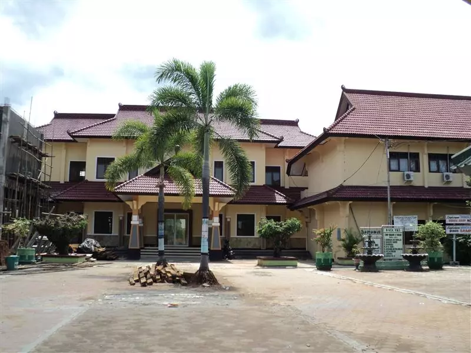

Praktik Pengalaman Lapangan (PPL) merupakan kegiatan pembelajaran yang memberikan pengalaman nyata kepada mahasiswa dalam melaksanakan tugas sebagai calon guru profesional di lingkungan sekolah.
SMP Negeri 3 Tuban merupakan sekolah menengah pertama negeri yang menjadi tempat pelaksanaan Praktik Pengalaman Lapangan (PPL) Program Pendidikan Profesi Guru (PPG) Prajabatan.
Sekolah ini berlokasi di Kabupaten Tuban, Jawa Timur, dengan lingkungan belajar yang nyaman, disiplin, dan mendukung pengembangan kompetensi calon guru profesional.
Melalui kegiatan PPL di SMP Negeri 3 Tuban, mahasiswa PPG memperoleh pengalaman nyata dalam melaksanakan pembelajaran, mengelola kelas, menyusun perangkat ajar, serta berinteraksi langsung dengan peserta didik.
Kegiatan ini menjadi sarana penting dalam meningkatkan kompetensi pedagogik, profesional, sosial, dan kepribadian sebagai calon guru yang kreatif, inovatif, dan adaptif terhadap perkembangan pendidikan.
1. Memberikan pengalaman mengajar secara langsung di sekolah.
2. Melatih kemampuan mengelola pembelajaran dan kelas.
3. Mengembangkan kompetensi pedagogik dan profesional calon guru.
4. Membentuk sikap disiplin, tanggung jawab, dan komunikasi yang baik.
PPL membantu mahasiswa memahami kondisi nyata di lingkungan sekolah serta meningkatkan keterampilan dalam melaksanakan pembelajaran.
Selain itu, kegiatan ini menjadi sarana pengembangan diri untuk menjadi guru profesional yang kreatif, inovatif, dan adaptif.